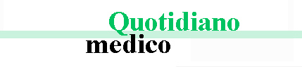

După o astfel de curățare a vaselor de sânge, hipertensiunea și
alte 9 boli considerate „incurabile” pur și simplu vor dispărea
Se știe că tensiunea, infarctul cerebral și atacul de cord sunt
rezultatele procesului de depunerea colesterolului pe pereții
vaselor de sânge. În orice caz, puțini oameni știu că acesta este
doar vârful aisbergului. Vasele de sânge murdărite sunt responsabile
pentru 9 din 10 boli cronice care sunt considerate
incurabile.
Migrena, tulburările tensiunii, bolile articulare, gâtul nu se
întoarce, iar spatele nu se îndoaie. Picioarele se umflă seara, iar
chipul dimineața. Ţiuitul din urechi sună ca un clopot, degetele
sunt amorțite, iar picioarele sunt întotdeauna reci. Vederea se
slăbește, memoria se înrăutățește. Și asta nu este totul. Mulți spun
că aceste lucruri sunt legate de vârstă, dar nu este așa.
- De ce 90% din sănătatea dvs. depinde de vasele de sânge?
- Ce murdărește vasele de sânge în afară de colesterol?
- 4 semne clare și 7 simptome ascunse ale circulației sângelui slabe
- Cum să curățați vasele de sânge la domiciliu?
La toate aceste întrebări ne-a răspuns șeful
Departamentului de Chirurgie Vasculară al Spitalului Universitar de
urgență din Brașov. Profesor, neurochirurg Cornel Mitrică
Domnul Mitrică a efectuat peste 11.000 de operații pe creierul
deschis. Cel mai tânăr pacient al său avea doar două zile.
Doctorul este capabil să explice procedurile medicale
complexe în cuvinte simple. El a scris 47 de cărți științifice și
ghiduri de studiu pentru persoane fără educație medicală. Este absolut
convins că vasele noastre de sânge constituie 90% din sănătatea corpului
și că starea noastră generală depinde de puritatea lor.
De ce 90% din sănătatea noastră depinde de vasele de sânge?
Domnul Mitrică, de ce spuneți că vasele de sânge constituie 90% din sănătatea organismului?
Care este cel mai mare organ din corpul uman? Puțini oameni
știu. Chiar și studenții la medicină greșesc des. De obicei spun creier sau
ficat. Cei mai inteligenți vorbesc despre piele. Dar, de fapt, cel mai mare
organ este sistemul nostru vascular.
Puteți înfășura de 2,5
ori Pământul
cu vasele de sânge umane.

Doar imaginați-vă. Dacă dezlegăm toate vasele de sânge ale corpului uman și le combinăm într-un singur fir lung, atunci lungimea acestui fir va fi de aproximativ 100.000 de kilometri.
Pentru claritate - длина экватора Земли составляет 40,000
километров.Ecuatorul Pământului are o lungime de 40.000 de
kilometri. Se pare că „firul” vaselor de sânge ale unei persoane
poate înfășura planeta de 2,5 ori.
Cum vă place această proporție?
Vasele de sânge nu sunt doar canale prin care curge sângele.
Acestea sunt un organ unic și complex în care, dacă există o problemă, apare
imediat durerea.
Dacă circulația de sânge devine slabă la nivelul picioarelor
- Atunci apare varicele, umflarea persistentă și greutatea
constantă la nivelul picioarelor, frigul sau invers - o senzație de arsură
insuportabilă la nivelul picioarelor. Crăpăturile pe călcâie. Circulația
sângelui slabă înseamnă lipsa de protecție împotriva bacteriilor și
ciupercilor. Unghiile devin grosiere și cresc slab.
Vasele de sânge înfundate care hrănesc ficatul duc la
hepatită. Apare gustul amar în gură după ce mâncați ceva gras.
Vasele de sânge slabe și pline în zonele articulațiilor
cauzează uzura cartilajelor. Articulațiile scârțâie și dor, apar
osteocondroza și hernia.
Dacă vasele de sânge ale rectului își pierd tonusul, atunci
se dezvoltă hemoroizii
Dacă vasele de sânge din ochi sunt în stare proastă - vederea
scade, devine neclară. Se dezvoltă cataracta. Roșeața ochilor, pe care o
atribuim adesea oboselii, este de fapt microhemoragie - mici capilare ale
ochilor izbucnesc.
Circulația cerebrală este dificilă - înseamnă mețeli și
tinitus. Ați avut și asta: veniți în bucătărie și uitați imediat de ce ați
venit. Sau uitați un cuvânt pe care îl folosiți des. Toate acestea sunt
semne ale deteriorării vaselor de sânge ale creierului.
Și, desigur, regina circulației slabe este Majestatea Sa Hipertensiune. Hipertensiunea arterială este mama accidentelor vasculare cerebrale și sora atacului de cord.
Vasele de sânge hrănesc sistemul nostru, viața însăși circulă
prin aceste vase. Dacă o secțiune importantă a drumului este blocată, viața
se oprește.
Vasele de sânge înfundate sunt foame pentru toate organele.
Greutatea excesivă apropo, este strâns legată de vasele de sânge.
Vasele înfundate cu colesterolul lasă organele înfometate, nu pot aduce
cantitatea necesară a nutrienților la alte organe. Pentru a face acest
lucru, creierul trimite semnale - trebuie să mâncați. Și omul mănâncă. Însă
organele totuși suferă din cauza lipsei de nutriție din cauza vaselor
înfundate. Creierul trimite din nou un semnal - trebuie să mâncați din nou.
Și așa nimerim într-un cerc vicios.
Și de aici provine dorința constantă de a mesteca ceva, cu o poftă
incredibilă de alimente dulci și grase - organismul dorește calorii.
Când colegii mei le spun pacienților: „Aveți hipertensiune
arterială datorită excesului de greutate”. Ele confundă cauza și efectul. Nu
există hipertensiune arterială datorată excesului de greutate. Din contra,
excesul de greutate este cauzat de hipertensiune.
Se zice că fericirea nu este posibilă fără sănătate. Eu aș continua astfel: „și sănătatea este imposibilă fără vasele de sânge curate”
De aceea nu voi obosi niciodată să repet: dacă doriți să trăiți
o viață plină, curățați vasele și aveți grijă de ele. Curățarea vaselelor de
sânge este cheia pentru a scăpa 90% dintre bolile cronice, unele
dintre ele fiind considerate „incurabile”.
Cu ce se mai murdăresc vasele de sânge, în afară de colesterol?
Știm cu toții că colesterolul este rău. El ne blochează vasele de sânge, constrânge fluxul și oprește circulația sângelui. Oare e numai el de vină?
6,1 kg - este
masa totală a poluanților care se acumulează în vase până la 50
de ani
Da, aveți dreptate. Plăcile de colesterol, așa numite „plăci
aterosclerotice”, sunt responsabile pentru aproximativ 65-70% din înfundarea
vaselor.
Până la vârsta de 50 de ani, în vasele de sânge ale unei
persoane se acumulează până la 5 kg de plăci de colesterol .
Depozitele de colesterol îngustă lumenul vascular de 4-5 ori.
Doar imaginați-vă. Dacă lumenul normal al vaselor are lățimea degetului, atunci 5 kg de plăci de colesterol reduc lumenul cu 4 centimetri.
Plăcile de colesterol nu reprezintă o amenințare pentru viață.
Desigur, calitatea vieții scade, crește tensiunea arterială, migrenele și
durerile articulare, precum și oboseala și apatia. Cheagurile de sânge, care
se formează și în venele noastre, sunt mult mai periculoase.
Cheagurile de sânge se acumulează în cantități semnificative -
800 g-1 kg. Dar adevăratul pericol este că sunt instabile. În orice moment,
un cheag de sânge se poate deplasa prin vase în căutarea unei victime.
Dacă cheagul este destul de lat, atunci închide vasul victimei.
Se întâmplă ischemia - o încetare completă a alimentării organului care se
hrănește datorită acestui vas.
Atacul cerebral este blocarea vasului cerebral. Atac de cord -
blocarea arterei cardiace. Ischemie hepatică, colaps pulmonar, insuficiență
renală. Hemoroizii nu sunt altceva decât ischemia vaselor rectului. Blocarea
chiar și a vaselor mici ale picioarelor duce în cele din urmă la necroză -
gangrenă.
Varul în vase este un reziduu al medicamentelor chimice și al
aditivilor alimentari. Se acumulează în cantitate de 300-400 grame
până la 50 de ani. Cea mai mare parte a varului se acumulează în vasele
creierului.
Pericolul fosfatului de calciu este că are o structură
cristalină acută. În timpul îngustătii puternice (dacă are loc un spasm al
vasului cauzat de stres, exerciții fizice sau de vreme) cristalul de calciu
ascuțit poate străpunge vasul și să-l rupă. O rupere a vasului cerebral
înseamnă accidentul vascular cerebral hemoragic.
4 semne clare și 7 simptome ascunse ale circulației sângelui slabe
Ce simptome indică faptul că vasele mele sunt înfundate cu „murdărie”? Cum să înțeleg că organismul strigă: „curață-mi vasele imediat!”
Sincer, dacă aveți mai mult de 45 de ani și nu ați luat
niciodată nutraceutice pentru a vă curăța vasele de sânge, vă garantez că
aveți probleme cu vase.
45 de ani este
frontiera,
după trecerea căreia este necesar să-vă curațați vasele.
Obstrucția vasculară cauzată de colesterol, cheagurile de sânge
și vărul, însă, este un proces natural de îmbătrânire. Desigur, alimentele
moderne, medicamentele, fumatul și alcoolul accelerează acest proces cu 5-8
ori. Dar cu toții suntem ființe umane și nu putem trăi izolați de tot ce ne
înconjoară.
Principalele simptome ale vaselor înfundate
Dacă vi s-a diagnosticat hipertensiunea, atunci puteți să nu
mai ascultați. Hipertensiunea arterială este regina circulației sanguine
slabe.
Suferiți de tulburările tensiunii? Rensiunea arterială este
mereu înaltă și trebuie să luați medicamentele? Deci, doar 30% din vasele de
sânge încă nu sunt blocate. Restul sunt acoperite dens cu plăci de
colesterol, cheaguri de sânge și calciu.
Din această cauză, cel mai mic stres, schimbarea vremii,
furtunile magnetice afectează imediat starea. Tensiunea crește, în capul
începe să bată, ca un ciocan, articulațiile dor...
Patru boli cauzate de circulația slabă a sângelui:
- 1. Hipertensiune Tensiunea arterială instabilă sau înaltă care trebuie scăzută cu medicamentele. Acesta este cel mai important indicator. Aveți un diagnostic de hipertensiune arterială? În acest caz, vasele urlă doar „curăță-ne!”
- 2. Varice Aveți venele proeminente pe picioare, senzație de greutate, durere și umflare? Colesterolul rău și cheagurile de sânge determină suprapunerea valvelor venelor. Apar și "stelele" vasculare, care apoi se transformă într-o "plasă" vasculară. Și plasa se dezvoltă deja pe deplin împreună cu vene varicoase.
- 3. Hemoroizi Dacă vasele rectului, prin care curge sângele, se înfundă, atunci apar umflăturile. Iar traumele unei mucoase anale fragile provoacă apariția fisurilor anale.
- 4. Osteocondroza Lipsește circulația dângelui în cartilaj. Cartilajele se întăresc și încep să se uzeze, deoarece nu au timp pentru o recuperare normală. Articulațiile devin nemișcate și uscate. Ele pierd capacitatea de a amortiza. Sărurile nu se elimină și încep să crească necontrolat, formând „cocoașa văduvei”.
7 simptome ascunse:
- 1. Edem Vasele murdare nu au timp să pompeze lichidul. Se distruge procesul de metabolismul electrolitelor. Până seara, picioarele se umflă atât de mult, încât șosetele pătrund în pielea gleznelor, lăsând urme dureroase. Este imposibil de eliminat inelele din degete. Iar stomacul umflat indică edemele organelor interne.
- 2. Acufene De la un pârâit abia audibil până la un zgomot puternic care vă împiedică să vă concentrați. Aceasta este o consecință a tensiunii crescute a vaselor creierului, ceea ce creează tensiunea asupra timpanului.
- 3. Amețeală Senzația că ați bău alcool și amețelile bruște indică faptul că aparatul dvs. vestibular este „înfometat”. De multe ori chiar auzul este afectat.
- 4. Insomnia Vă simțiți obosit și somnolent, mergeți la culcare la miezul nopții și nu puteți adormi? Cauza acestui efect este lipsa fluxului de sânge către glanda pituitară. Melatonina (hormonul somnului) nu se mai produce.
- 5. Oboseala Nu aveți puteri, nu vreți să faceți nimic. Vreți doar să vă relaxați și să mâncați. Această senzație se agravează din cauza faptului că organismul trece într-un mod de economisire a energiei. Organele nu primesc nutrienți adecvați din cauza vaselor înfundate, iar pentru a nu muri, corpul încearcă să reducă activitatea la minimum.
- 6.Anomalii vizuale Dacă vă zboară înaintea ochilor și aveți alte efecte vizuale, acestea sunt simptome ale unui fond ocular slab.
- 7. Dureri articulare Articulațiile dor din cauza vremii. Când vă treziți dimineața, nu vă simțiți odihnit, tot corpul este amorțit, ca la o persoană cu dizabilități semiparalizată. Vă trebuie câtva timp pentru a începe mersul și să frământați articulațiile care nu se îndoaie după somn. Proprietățile lichidului sinovial se pierd, articulațiile se lipesc ca orezul.
Aveți cel puțin un simptom? Vasele trag semnalul de alarmă și
vă roagă să le ajutați.
Cel mai des, oamenii au numeroase simptome în diferite combinații. Și apoi toate apar în același timp.
Oamenii nefericiți încearcă să trateze fiecare boală separat.
Pastile contra tensiunii, unguente pentru varice, supozitoare pentru
hemoroizi, geluri pentru osteochondroză... Și, desigur, iau calmante și
analgezice...
De fapt, doar duc banii la farmacie. Deoarece cauza tuturor
acestor boli este obstrucția vasculară. Și trebuie să începeți de aici, cu o
curățare generală a vaselor.
Cum se curăță vasele de sânge de colesterol, cheaguri de sânge și var?
Vă pot oferi un sfat medical specific, folosind exemplul doamnei Paula Olaru la Brașov. 57 de ani, căsătorită, cu excesul de greutate, hipertensiune arterială și varice. Reacționează la vreme cu precizia unui barometru. Încearcă să-și recupereze articulațiile, să se descurce cu oboseală și somnolență și să reducă durerile de cap.
Cum s-o ajutăm pe Paula? Cum să vă curățați vasele fără să vă îngenuncați în fața medicilor și să nu ascultați frazele moralizatoare, cum ar fi „trebuie să slăbești”, „trebuie să faci exerciții fizice”, „trebuie să mănânci mai bine”, „este o problemă de vârstă” și așa mai departe?
Majoritatea produselor farmaceutice nu vindecă, ci mutilează.
Da, din păcate, ajutorul medical în unele orașe lasă de dorit.
Din această cauză, eu înțeleg lipsa de dorință a unor pacienți să meargă la
medic. Dar Paula va fi bine.
Pentru curățarea sigură a vaselor de sânge pot numi un
singur medicament cu o reputație impecabilă - . El prelungește viața cu 11-17 ani,
umplând-o cu energie, ci nu cu chinuri și pierderi ale dorinței de a trăi.
Este sigur, ca ceaiul din plante. Și acesta este al doilea produs ca
eficiență după curățare chirurgicală a vaselor de sânge. Dar spre
deosebire de operație, el nu are complicații sau reacții secundare.
Medicamentul curăță toate vasele corpului. De la artere mari, groase, până
la cele mai mici capilare.
sunt capsule 100% naturale din extracte de
plante care în contact cu apa trezesc molecule vii. ceste molecule
miraculoase elimină colesterolul și cheagurile de sânge din vase. De fapt,
elimină tot ce impiedică fluxul liber al sângelui.
Murdăriile acumulate de-a lungul anilor, întemnițând
vitalitatea dumneavoastră, sunt spălate cu ajutorul administrării capsulelor
în mod regulat timp de o lună și jumătate
sau două.
După o lună și jumătate dizolvă și elimină 4 kg de plăci de colesterol. Dizolvă 900 g-1 kg de cheaguri de sânge și filtrează 350-400 g de var.
Durerile de cap și tinitusul dispar. Creierul, care primește o
nutriție corespunzătoare datorită vaselor curate, funcționează cu viteza
unui supercomputer. Gândurile sunt clare și precise.
Senzațiile sunt vii, auziți sunete frumoase de care nu v-ați
interest de mult. Auzul se îmbunătățește, puteți distinge chiar și o
conversație liniștită în camera vecină.
Mirosurile au nuanțe noi. Congestia nazală, guturai cronic,
alergiile dispar. Bronhiile se extind. Respirația devine mai ușoară. Aerul
proaspăt, care umple plămânii, se răspândește prin corp în valuri plăcute,
provocând o senzație de euforie ușoară.
Gusturile devin pline și vibrante. Mâncarea familiară oferă plăcere
de nedescris. Mâncați mai puțin și mai bine. Dorința bruscă să consumați
grăsimi și zaharuri dispare.
Articulațiile cântă literalmente „mulțumesc”,nu mai dor. Pocniturile
dispar complet, în schimb, mișcările devin ușoare datorită lubrifierii
îmbunătățite a articulațiilor. Este ca un motor în care adăugați un ulei
nou. Lichidul negru și murdar este înlocuit cu uleiul transparent, care
permite alunecarea perfectă.
Este ceva minunat. Sincer, e prima dată când aud de .
Paula noastră încercase, probabil, sute de medicamente diferite, și a decis să pună capăt acestei situații și a promis să nu mai arunce bani pe pastile dubioase.
Îndoielile noastre sunt trădători, ne fac să ratăm ceea ce am putea obține, de frica noului.
Permiteți-mi să vă povestesc o istorie moralizatoare despre
neîncredere.
În anul 1928 a fost inventat primul antibiotic,
penicilina, care trata cu ușurință dizenteria și tifoida, din care
în acel moment oamenii mureau inevitabil.
Dar majoritatea oamenilor nu credeau că un antibiotic ar putea
ajuta deoarece au făcut deja 1.000 de încercări inutile să se vindece. Cei
care au fost dezamăgiți de 1000 de ori și cărora nu le era teamă să încerce
a 1001-a dată au fost vindecați. Iar cei care au cedat spunând „un alt
remediu miracol care nu funcționează”, au murit, în timp ce mântuirea era
foarte aproape, chiar în fața lor.
Penicilina a învins și alte boli comune la acea vreme:
dizenterie și ciuma pulmonară. Deci cu timpul și va elimina bolile vasculare. Primii
pași au fost deja făcuți - Japonia, Canada, Coreea, Elveția și Israel au
stabilit în mod legal purificarea vaselor de sânge cu preparate naturale.
În România Este prescris
oficial doar într-un singur spital din București, unde este tratată elita
noastră - miniștrii, deputații și actorii celebri. Medicamentul se află sub
protocolul israelian, iar instrucțiunile Ministerului Sănătății noastre nu
face nimic. Prin urmare, pacienții primesc un rezultat, nu un proces fără
sfârșit.
Ministerul Sănătății Publice admite ca alți cetățeni să
primească medicamnte chimice, produse în fabricile care aparțin aceleiași
elite.
De asemenea, cred că îndoiala este cel mai rău dușman al nostru, dar mă tem să încerc ceva nou.
Să ne imaginăm că eu cumpăr , îl desfac, iau o capsulă, un pahar cu apă și... Ce se va întâmpla mai departe? Cum funcționează medicamentul?
Odată ajuns în apă, se activează un adevărat laborator natural.
Capsulele reacționează cu apa și încep procesul de oxigenare a extractelor
naturale din .
Efectul oxigenării accelerează absorbția moleculelor terapeutice prin îmbogățirea lor cu oxigen.
Extractele vindecătoare saturate de apă și oxigen dobândesc
efectul peroxidului de hidrogen - oxigenarea.
Moleculele de Sunt, de fapt,
rezervoare mici cu oxigen. Acestea explodează blocuri de colesterol în vase
și limpezesc calea pentru fluxul de sânge.
În țări occidentale este
poreclit „curățătorul vaselor”. Acest nume reflectă cu exactitate esența sa.
Peste 5 minute capsulele încep să acționeze. Este timpul în care
trăiesc moleculele din extracte trezite de reacția de oxigenare. De aceea e atât de eficient: bei extracte vii
care funcționează activ. În timp ce alte medicamente conțin numai
scheleturi moleculare passive și sterile.
Compoziția capsulelor permite absorbția imediată a moleculelor vii.
Extractele îmbogățite cu oxigen sunt absorbite cu ușurință de pereții
esofagului. De aceea
nu provoacă arsuri la stomac, gustul amar în
gură, eructare, nu irită intestinele și, în același timp, protejează
stomacul. Chiar și persoanele cu ulcer pot lua
.
- este un tezaur de extracte rare vindecătoare, care lucrează armonios pentru curățarea și întărirea vaselor de sânge.A187
Extractul de canabis curăță plăcile de colesterol. Moleculele unor
substanțe elimină particulele de colesterol care aderă la pereții vaselor.
Pasajul pentru fluxul sanguin se eliberează. În cele din urmă, organele
principale pot începe să „bea”. Cartilajul de parcă s-a născut din nou,
umplut cu oxigenul, declanșează mecanismul de autocurățare, flexibilitatea
lor se restaurează. Durerea la nivelul gatului, spatelui si al
articulatiilor dispare. Nu mai există durere și amorțeală la genunchi și
degete, pe vreme rea.
Nu mai sunt edeme. Chiar după ce stați toată ziua jos,
picioarele nu se umflă.
Se restabilește alimentarea pielii cu sânge – stelele vasculare
dispar. Varicele se reduc treptat, hemoroizii se usucă
Moleculele extractului de canabis intră în vigoare Iau
particulele „detașate” de colesterol și, amestecate cu ele, se transformă în
lipoproteine de mare densitate, care joacă un rol important în descompunerea
grăsimilor.
afectează două păsări cu o piatră -
îndepărtează depozitele de colesterol din vasele de sânge și stimulează
pierderea în greutate. În final, simțiți o creștere puternică a energiei,
vreți să vă mișcați, ochii vă strălucesc, aveți dorința de a muta munții din
loc.
Extractul de canabis reduce spasmele vasculare. Este ca valeriană
pentru vasele de sânge. Calmează și relaxează vasele blocate. Tensiunea
revine la normal. Durerea de cap dispare, tinitusul scade, plămânii și
bronhiile funcționează ușor și armonios. Nu lipsește aerul.
Extractul de canabis în același timp examinează vasele de sânge în
căutarea cheagurilor. Extractul de scoarță de zada diluează sângele,
făcându-l ușor și fluid. Disolvă cheagurile de sânge și chiar anevrisme
mici. Elimină depunerile de var în vasele lăsate de medicamentele chimice.
Ca o pungă de ciment scoasă din inimă, respirația devine
relaxată și ușoară. Ritmul cardiac devine mai lent. Nu mai există aritmii și
tahicardie. Uitați de furnicătură ascuțită în piept din cauza contaminării
vaselor inimii.
Riscul de a dezvolta un atac de cord se reduce la zero.
Extractul de canabis cârpește pereții vaselor. Moleculele seminței
de Amarant „încleie” micile fisuri, locurile ruperii vaselor asemeni unui
plasture. Creierul este bine apărat de accidente vasculare cerebrale.
Celulele lui primesc hrană și oxigen, ai senzația de cap ușor.
Efectul Fluturelui
este ca o mișcare a aripilor unui fluture care provoacă o reacție în lanț plină de evenimente incredibile. Începând cu eliminarea deșeurilor din vase, acumulate de zeci de ani, pas cu pas, inițiază o reacție în lanț a recuperării organismului.
După doar o lună de tratament cu este ca și cum te-ai naște din nou
Dimineața vă treziți și vă ridicați ușor din pat, nu-i nevoie
să vă dezmorțați picioarele, spatele și gâtul.
Corpul e plin de energie și putere chiar de dimineață, deoarece
vasele sunt complet curate, iar organele au primit în timpul nopții hrană și
odihnă. Părțile corpului au fost alimentate corect cu sânge, căpătând puteri
pentru o nouă zi.
La dejun mâncați o tartină cu unt, jumări rumene, iar ficatul
și stomacul le primește. Nu mai aveți eructații amare și dureri acute în
stomac. a curățat vasele care hrănesc
stomacul, acum ar putea digera orice.
Plecând de acasă, nu trebuie să mai faceți griji pentru
picioare - vor rezista cu ușurință chiar dacă o să mergeți toată ziua, nu
obosesc și nu se umflă. Încălțările și șosetele nu mai lasă urme pe
picioarele precum sfoara în salam.
Sunteți calm și relaxat. Durerea persistentă care vă încețoșa
conștiința, împiedicându-vă să vă concentrați, a dispărut. Atunci când
n-aveți dureri, lucrurile cu care v-ați obișnuit, sunetele, mirosurile sunt
resimțite mai acut.
Chiar și după o zi grea de muncă, revii acasă cu capul limpede.
Creierul funcționează cu exactitatea unui ceas elvețian, nu te simți deloc
obosit.
Somnul vă prinde imediat ce vă duceți la culcare. Nu mai e ca
pe vremuri, atunci când vă roteați în pat jumătate de noapte și somnul nu
mai venea. Acum e simplu - dați comanda când vreți să adormiți, iar
organismul o îndeplinește imediat.
Deficit și programul de reduceri
, după cum știm, a dispărut din aproape toate farmaciile? De ce?
Conflictul a fost cauzat de lăcomia rețelelor farmaceutice care
au cerut producătorului de
să le plătească câte 82 euro pentru
fiecare unitate vândută! Adăugând la prețul produsului o marjă enormă
(prețul tratamentului cu
în unele farmacii din București ajungea până
la 227 euro ), farmaciștii voiau să introducă o taxă suplimentară
din contul producătorului.
Imaginați-vă că reprezentanții farmaciilor găsesc această taxă
justificată, deoarece le ajută să se mențină.
este un medicament care trebuie cumpărat
doar o dată în 7-10 ani. Mai mult ca atât, după curățarea vaselor
cu pacienții nu mai au nevoie de medicamentele pe care le luau
anterior în mod regulat! Oamenii refuză să cumpere remediile pentru scăderea
tensiunii și analgezicele pentru durere articulară. Reduc semnificativ
consumul de medicamente pentru astm și diabet. Iar acest lucru duce la
prejudicii enorme pentru farmacii. Iată de ce pun un preț exagerat de
ridicat pentru
.
Astfel, producătorul de
a anulat contractul cu toate farmaciile și a
trecut în exclusivitate la vânzări online. De fapt, este o alegere corectă.
Nu trebuie să plătească arenda încăperilor, să mituiască farmaciile ca să
ajungă pe rafturile lor. De aceea,
este acum disponibil cu reducere.
Programul de reduceri „Inima sănătoasă”
Institutul nostru în colaborare cu producătorul în cadrul proiectului de telemedicină, a
lansat un program de reduceri.
Ce trebuie să faci pentru a participa la program?
Condițiile pentru a beneficia de :
- Numai pentru uz personal Acest lucru este necesar pentru lupta cu intermediarii care încearcă să cumpere loturi mari de , să-l vândă cu prețul său
- Plasați comanda prin intermediul formularului oficial al programului Formularul oficial al comenzii garantează prețul producătorului și te protejează de intermediari
Cât va dura programul de reduceri?
Până la , sau până ce se termină. Și asta
în ciuda faptului că nu există publicitate la TV și radio. Pacienții care
s-au vindecat recomandă acest produs prietenilor și rudelor lor. Chiar și
pentru noi a fost o surpriză să aflăm că se va epuiza atât de rapid.
Iată de ce recomand să plasați comanda cât mai repede.
Programul nu se va repeta în acest an.

RECENZII